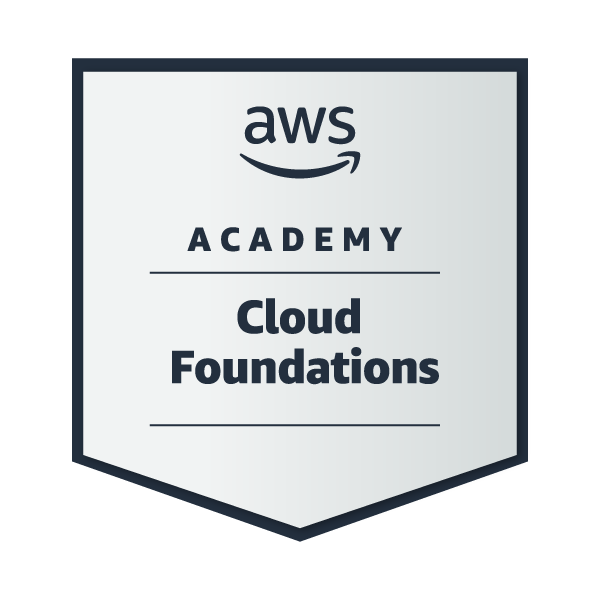
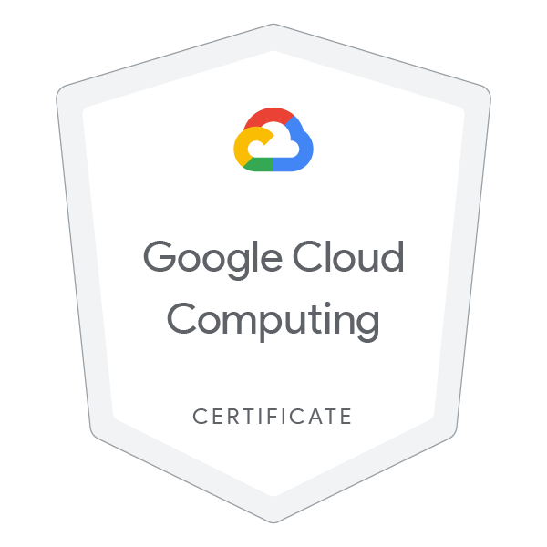

BERANDA ABOUT SERTIFIKASI KEAHLIAN PENGALAMAN SEKOLAH
Sertifikasi yang Saya Capai
1. Sertifikasi Amazon Cloud Computing

Sertifikasi AWS Cloud Computing adalah serangkaian sertifikasi yang diberikan oleh Amazon Web Services (AWS) untuk mengukur keterampilan dan keahlian seseorang dalam menggunakan layanan AWS.
Sertifikasi ini dibagi menjadi beberapa level, yaitu:
1. Foundational – AWS Certified Cloud Practitioner (dasar-dasar AWS).
2. Associate – Sertifikasi untuk peran seperti Solutions Architect, Developer, dan SysOps Administrator.
3. Professional – Tingkat lanjut untuk Solutions Architect dan DevOps Engineer.
4. Specialty – Fokus pada bidang tertentu seperti keamanan, machine learning, dan jaringan.
2. Sertifikasi Google Cloud Computing Foundation

Google Cloud Computing Foundation adalah program pembelajaran yang memperkenalkan konsep dasar komputasi cloud menggunakan Google Cloud Platform (GCP).
Kursus ini mencakup:
1. Prinsip dasar cloud computing
2. Model layanan cloud (IaaS, PaaS, SaaS)
3. Layanan utama GCP seperti Compute Engine, Kubernetes, dan BigQuery
Kursus ini cocok untuk pemula yang ingin memahami teknologi cloud sebelum melanjutkan ke sertifikasi Google Cloud yang lebih lanjut.